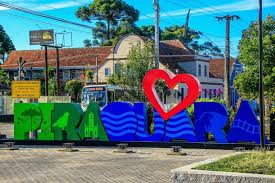

MEU IDOLO
HISTÓRIA DE PIRAQUARA

Antes da chegada dos primeiros europeus à região atualmente ocupada pelo município de Piraquara, a mesma era frequentada, durante o verão, por índios carijós
(um ramo dos índios guaranis), os quais viviam, durante a maior parte do ano, no litoral.
O povoamento de origem europeia dos Campos Gerais de Curitiba teve início por volta de 1660, nos trabalhos de mineração à procura de ouro realizados pelos
bandeirantes, vicentistas e portugueses.
Arraial Grande foi um dos núcleos fundados por mineradores: dele, se originaram Curitiba, o atual município de São Jose dos Pinhais e o de Piraquara.
O mineiro Manoel Picam de Carvalho, um dos pioneiros da colonização do município de Araucária, acompanhando as lutas pela procura do ouro no planalto curitibano,
fundou, por volta de 1700, uma fazenda, formando um pequeno arraial de mineração no local onde, hoje, se encontra o município de Piraquara.
Em 1731, Manoel Picam de Carvalho vendeu a sua fazenda a Antônio Esteves Freire e a dona Isabel da Serra, sua sogra.
Nessa época, além da fazenda já referida, havia outras nas vizinhanças que, em conjunto, formavam um povoamento que recebeu a denominação de Piraquara.
Apesar de sua antiguidade, o povoado de Piraquara permaneceu estacionário durante muitos anos, como parte integrante do Distrito Policial, depois Município
de São José dos Pinhais. Seu progresso, especialmente nos setores da agricultura e da pecuária, iniciou com a vinda de imigrantes europeus, principalmente
italianos que, em 1878, aqui chegaram em número aproximado de 350 pessoas e fundaram a Colônia Santa Maria, atual Nova Tirol.
Outro fator de progresso da localidade ocorreu em 1885 com a inauguração da Estrada de Ferro do Paraná, ligando o litoral paranaense a Curitiba, com os trilhos
passando por Piraquara, onde foi construída uma estação.
Em 1885, a povoação foi elevada a freguesia, com a denominação de Senhor Bom Jesus de Piraquara. Em 1890, passou à condição de vila, desmembrada de
São José dos Pinhais e com a nova denominação de "Deodoro" em homenagem ao marechal Manoel Deodoro da Fonseca. Ainda em 1890, foi criado o município
com sede na Vila Deodoro, o qual voltou a denominar-se Piraquara em 1929.
Piraquara, com seus mananciais, é área de proteção ambiental e responsável por cinquenta por cento do abastecimento de água da grande Curitiba.
Atualmente, abriga o maior complexo penitenciário do Paraná. O aniversário da cidade é em 29 de janeiro e seu padroeiro é Senhor Bom Jesus dos Passos.
Sua população, segundo a contagem realizada em 2022 pelo Censo do Instituto Brasileiro de Geografia e Estatística, é de 118.730 habitantes.
ZACARIAS VIEIRA
(Homenageado que dá nome ao Plenário da Câmara)
Zacarias Vieira, piraquarense da localidade denominada Marmeleiro, nasceu em 16 de março 1923, filho de Manoel Alves Vieira e Adelina Biss Vieira. Em 1951, com 28 anos lançou-se candidato a prefeito de Piraquara pelo PTB, sendo eleito com 702 votos, onde exerceu seu mandato até os 32 anos, destacado por vários feitos em sua gestão, sendo alguns deles:
Presidente da associação rural, dando apoio ao desenvolvimento agrícola e iniciando a mecanização da lavoura da região;
Liberação de trânsito na estrada do encanamento, passando a jurisdição do Departamento de Água e Esgoto para o Departamento de Estrada e Rodagem do Estado
com o apoio do governador Bento Munhoz da Rocha Neto;
Implantou o "trem subúrbio" entre Roça Nova e Curitiba com o apoio do Presidente da República Getúlio Vargas, bem como promoveu a visita do Presidente á cidade
em 17 de novembro de 1953;
Foi presidente do Sindicato dos Laticínios e Produtos Derivados, no Estado do Paraná, quando fundou-se a Colônia Castrolândia e Carambei, com apoio do Banco
do Brasil, através da Carteira de Créditos Agrícolas e Industrial.
Após seu mandato como Prefeito tornou-se Vereador de Piraquara até os 36 anos, sendo também mestre de obras nas construções do ginásio do esporte do Tarumã,
edifício itália em Curitiba, parte do Hospital de Clínicas, o Manicômio Judiciário e a ampliação do Hospital Adauto Botelho no Canguiri.
Concursado pelo Departamento Administrativo dos Serviços Públicos, exerceu o cargo de Fiscal de Obras do Instituto do Café, realizando juntamente seu mandato
de Vereador em Quatro-Barras, a seguir tornou-se concursado como Agente de Engenharia.
Aos 61 anos, aposentado, dicou-se a ovinocultura em Piraquara, sendo eleito o primeiro presidente do núcleo de criadores de ovinos de Piraquara, fundado em
11 de setembro de 1993. Através da lei 188/94 de 17 de março de 1994, recebeu o titulo de Vulto Emérito de Piraquara, devido a seu reconhecimento público de seus
serviços prestados ao município.
Depois de seu falecimento em 23 de agosto de 2001, aos 78 anos, a Câmara Municipal de Piraquara, inaugura o Plenário Zacarias Vieira, em homenagem
a Zacarias Vieira.